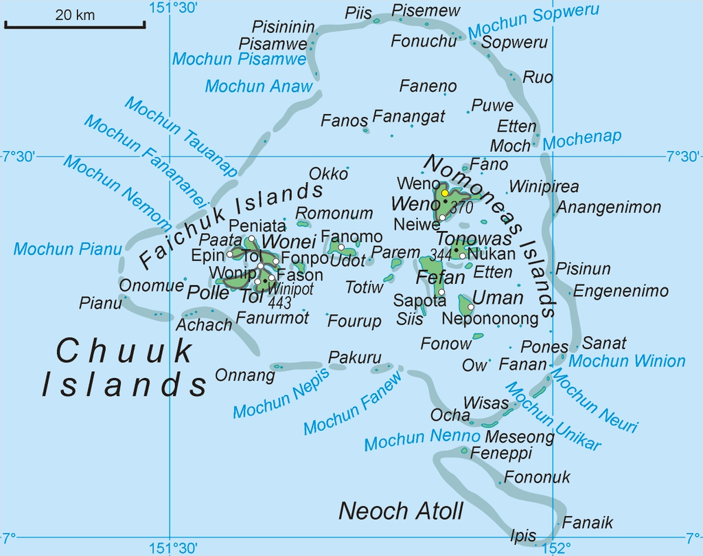

Fairchuck is a proud maritime nation steeped in a rich heritage of seafaring and cultural resilience. Strategically situated in the Pacific, it stands as a symbol of unity and independence, blending time-honored traditions with modern advancements. Committed to sustainability and global collaboration, Fairchuck navigates a future rooted in innovation, respect for its natural resources, and the enduring spirit of its people.
With a focus on preserving its maritime heritage while embracing the future, Fairchuuk continues to lead in areas of maritime governance, environmental protection, and global collaboration. Its people take pride in their culture and their role as stewards of the sea.